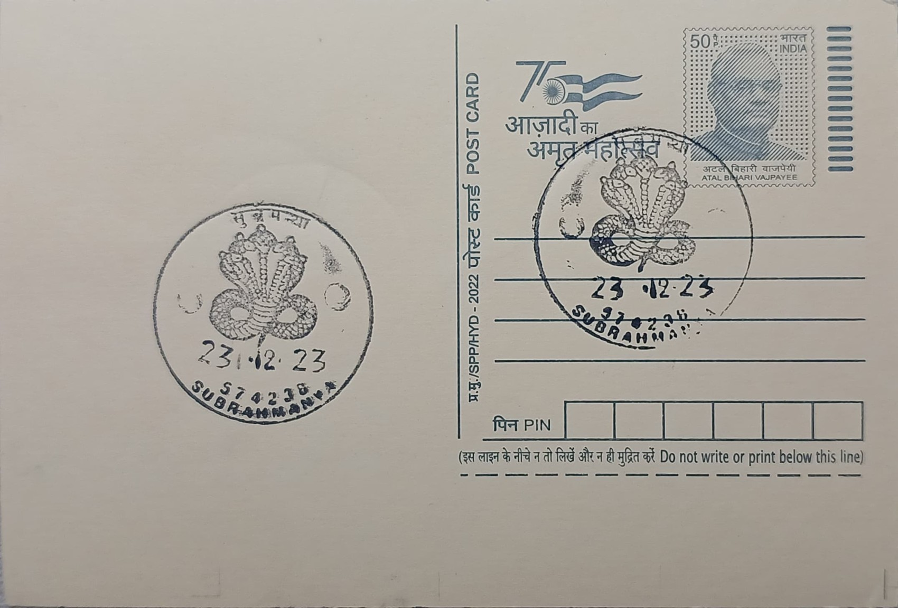

Vasuki
ವಾಸುಕಿ


In Hindu and Jain cosmology, Vasuki is counted among the foremost of the nagas, a serpent lineage descended from the sage Kashyapa and Kadru, and ranks as younger brother to Shesha, upon whose coils Vishnu reclines, and sibling to the serpent-goddess Manasa. Local legend tied to Dakshina Kannada adds a more specific episode: fleeing the relentless pursuit of Garuda, Vishnu's eagle-mount and the hereditary enemy of serpents, Vasuki is said to have taken refuge and performed penance in the Biladwara cave near present-day Subramanya, where Lord Subrahmanya (Kartikeya) granted him darshan and promised him sanctuary as a devoted attendant at that site in perpetuity, an episode that gave the settlement its enduring association with serpent sanctity.
Within the broader Hindu pantheon, Vasuki's principal claim to renown rests on the Samudra Manthan, the churning of the cosmic ocean recounted in the Mahabharata and in the Padma, Skanda, and Bhagavata Puranas, where devas and asuras jointly used him, wound about Mount Mandara, as the churning rope to draw forth the ocean's treasures and the amrita of immortality, with Vishnu's tortoise form, Kurma, bearing the mountain's weight from below. At Subramanya, this cosmological figure is further merged in local worship with Lord Subrahmanya himself, who is regarded as the supreme lord of all serpents and is invoked for relief from naga dosha, the astrological affliction attributed to ancestral or karmic wrongs against snakes, making the temple town a principal pilgrimage destination for rituals such as Sarpa Samskara and Nagaprathishte.
The friction of serving as the churning cord in the Samudra Manthan is said to have left Vasuki grievously wounded, and tradition holds that he subsequently journeyed to Prayaga, where bathing at the Triveni Sangam healed his injuries, an episode commemorated today at the Nagvasuki Temple on the banks of the Ganges in Prayagraj, one of the twelve jyotirlinga-associated shrines mentioned in the Puranas as sites of serpent worship. In Tulu Nadu, by contrast, Vasuki's presence is marked less by built shrines dedicated to him alone than by the ubiquitous naga stones, bare stone slabs or sculpted images of entwined serpents installed within temple courtyards, sacred groves, and ancestral family compounds, a vernacular form of worship that long predates, and still runs parallel to, temple Brahminical ritual in the coastal belt.
A distinguishing feature of this tradition is the Ashlesha Bali and Sarpa Samskara rites performed widely across Dakshina Kannada and at Kukke Subramanya in particular, in which devotees believed to suffer from naga dosha, often linked to infertility, skin ailments, or delayed marriage, undergo prescribed poojas addressed directly to Vasuki and the serpent deities, with the temple's priests and astrologers determining the specific remedial rites required; the practice draws pilgrims from across South India and has made the Subramanya shrine one of the subcontinent's principal centers for serpent-related propitiation, distinct from more conventional deity worship.
Administratively, the Kukke Subramanya temple, with which Vasuki's local cult is most closely bound, falls under the Muzrai (religious endowments) department of the Karnataka government and is served by a hereditary priesthood that has overseen its rituals for generations, while the surrounding naga shrines and groves of the Tulu Nadu countryside remain largely under the care of local families and village committees rather than any centralized body. The postal pictorial cancellation issued from Subramanya SO, carrying the image of Vasuki, thus marks a place where an ancient pan-Indian serpent myth and a distinctly regional devotional practice have converged into a single, continuously observed ritual complex still drawing pilgrims to the banks of the Kumaradhara river today.
| Date of Introduction | April 14, 2005 |
|---|---|
| Address | Sub Postmaster, |
| Subramanya SO, | |
| Dakshina Kannada (dt.), Karnataka - 574238. |